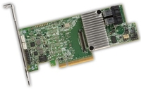

Типове RAID
RAID масивите се използват за подобряване на производителността на дисковете и повишаване на надеждността на информация в сървъра. Един RAID масив може да бъде създаден както чрез отделно хардуерно устройство, така и софтуерно като част от операционната система.
Хардуерен RAID
Най-често хардуерните RAID устройства се наричат RAID контролери. Те представляват отделен
микропроцесор със собствена памет, обединени на една обща платка, която се добавя към разширителите
слотове на основния компютър или сървър. Дисковете, които ще участват в масива се свързват към този
RAID контролер. Най-често RAID контролерите са производство на дадена компания и разполагат със
собственически затворен код.
Модерните RAID контролери имат вграден кеш за увеличаване на бързодействието. Съдържанието на този
кеш би било загубено при спиране на захранването на контролера. По тази причина съдържанието на кеш
паметта често е резервирано от BBU(Backup Battery Unit) или BBN (Battery Backup Module). Те
позволяват на RAID контролера да запамети информацията, която все още не е записана на диска. Това
устройство може да осигури резервно захранване на контролера така че той да запази информацията до
72 часа без захранване. След като бъде възстановено основното захранване на системата, BBU частта ще
запише съдържанието на кеш паметта на дисковете на масива. Цялото съдържание на буфера на RAID
контролера е невъзстановимо, ако той няма BBU. Много RAID контролери биха функционирали оптимално и
с най-висока производителност, ако имат инсталирано BBU устройство.
Предимства
- Висока производителност при по-сложни RAID системи и при ползването на битове за четност
- Не се използват ресурсите на системата (процесор, памет)
- Възможност за замяна на дискове в работещо състояние (disk hot swapping)
- По-малко време за възстановяване на масива при отпадане на някой от дисковете
- Лесен за инсталация – не е нужно инсталиране и конфигуриране на допълнителен софтуер
- При наличие на батерия (BBU) изчакващите записи в кеша на контролера няма да бъдат загубени при спиране на захранването
Недостатъци
- Допълнителни разходи - хардуерните RAID контролери, струват повече отколкото обикновените дискове контролери
- Алгоритмите и кодът са затворени собственически от компанията произвела контролера
- Ограничена възможност за замяна и миграция на дисковия масив
- Липса на гъвкавост (невъзможност за по-големи промени на масива)
- Високият клас контролери могат да бъдат доста скъпи
Софтуерен RAID
Един RAID масив също може да бъде изграден с помощта на код, който е част от операционната система. Софтуерният RAID използва споделените ресурси на системата – памет и процесор. Той е по-евтиният вариант в сравнение с хардуерния RAID.
Предимства
- По-евтин в сравнение с хардуерния RAID, част е от операционната система и не се изискват допълнителни средства за хардуер
- Отворен код – RAID масивът е независим от хардуера на системата
- Стандартизирана конфигурация за всяка една операционна система
- Сравнително добра производителност – процесорите стават все по-бързи
- За сравнително не големи натоварвания и задачи, софтуерният RAID е отлично и евтино решение
- Гъвкав метод – позволява преконфигурурането на RAID масива по множество различни начини
Недостатъци
- По-голяма сложност за изграждане в сравнение с хардуерния RAID. При по-сложни RAID системи и по-високи натоварвания отстъпва по производителност спрямо хардуерните контролери
- Невъзможна замяна на диск в работещо положение
- Използва част от ресурсите на системата (процесор и памет)
- Няма възможност за BBU, т.е. при спиране на захранването незаписаната информация в кеша се губи
- По-бавно възстановяване на масива
- По-голяма подготовка при инсталацията на операционната система